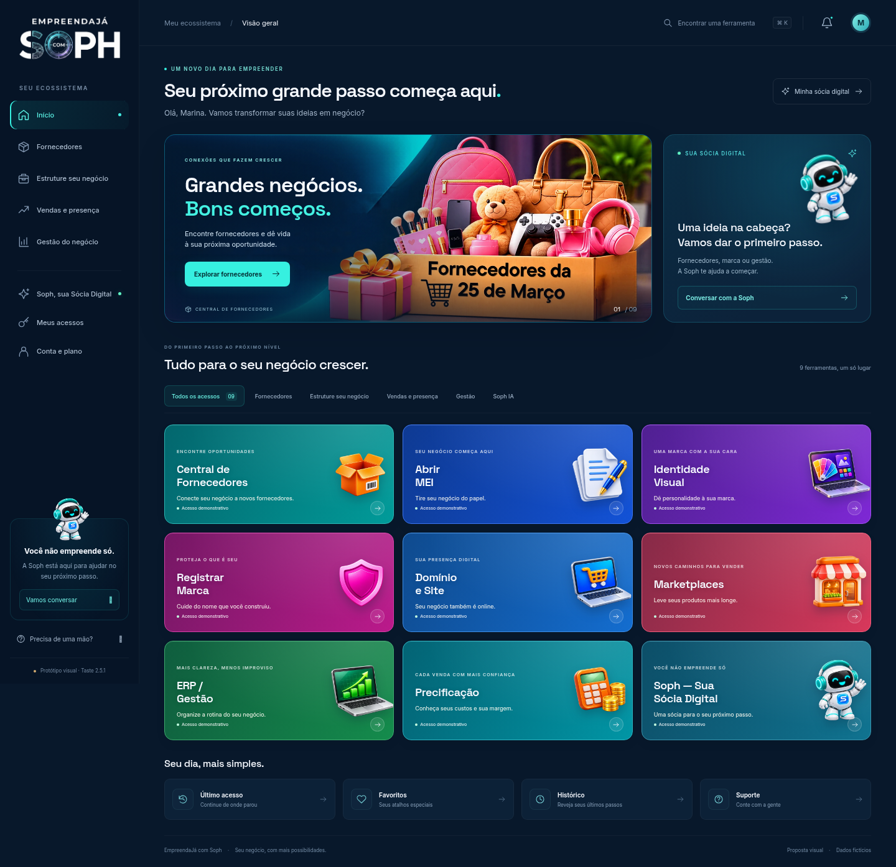

EMPREENDAJÁ COM SOPH · TASTE 2.5.1
Uma nova perspectiva para a sua Home.
Capturas reais do protótipo publicado, realizadas no Chromium. Perfil fictício e interações demonstrativas.
Desktop · 1440 px


Mobile · 390 px

Captura integral da página. A barra inferior fixa aparece na posição da janela de 844 px usada na captura.
Soph · conversa demonstrativa
Branch experimental: experiment/taste-home-prototype. Aplicativo original e integrações preservados.